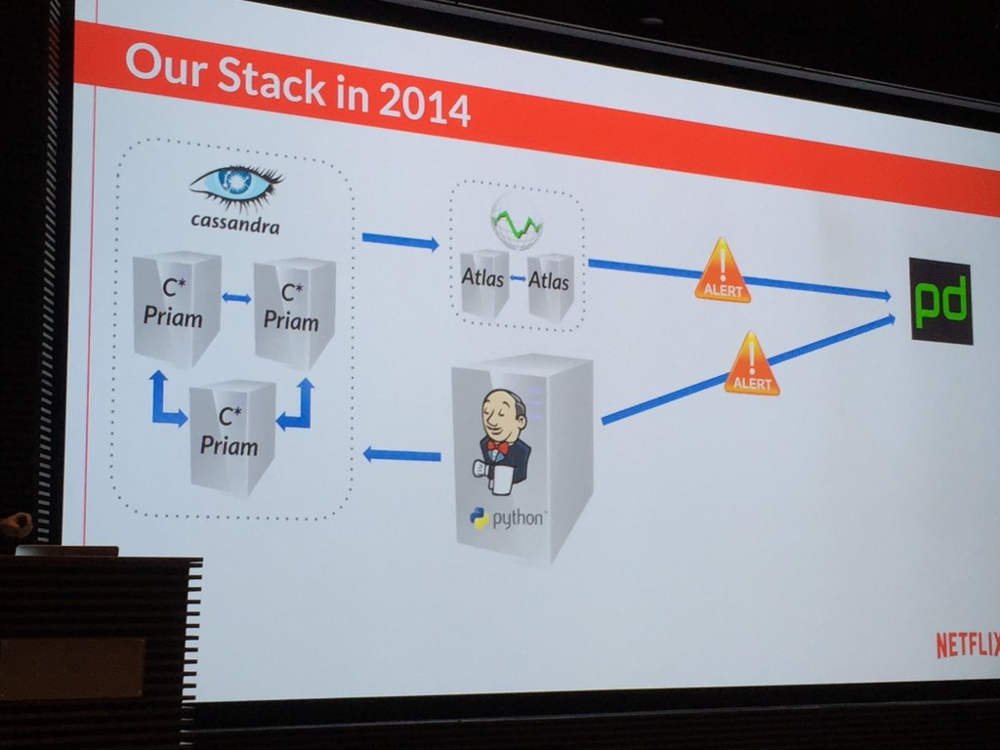
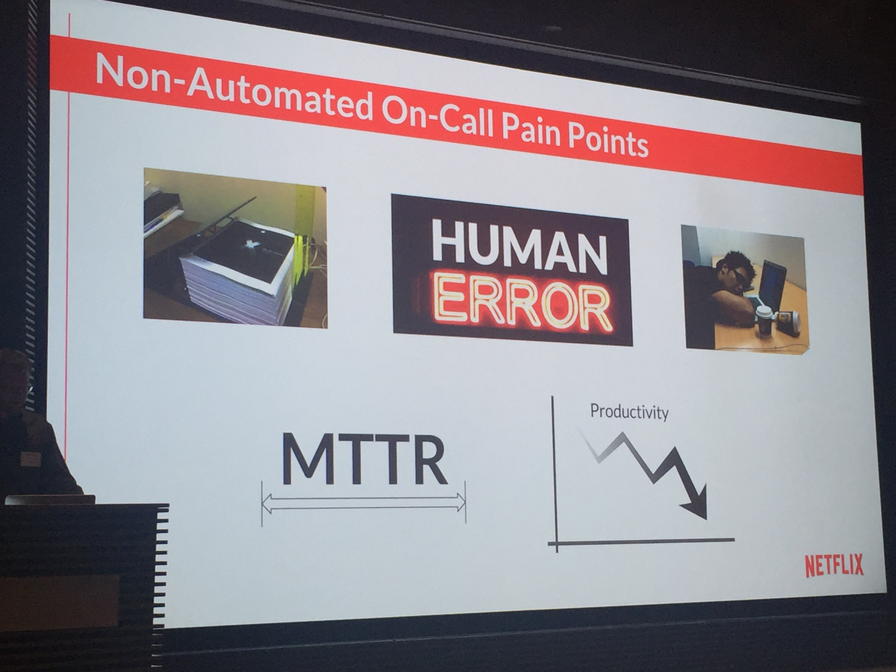
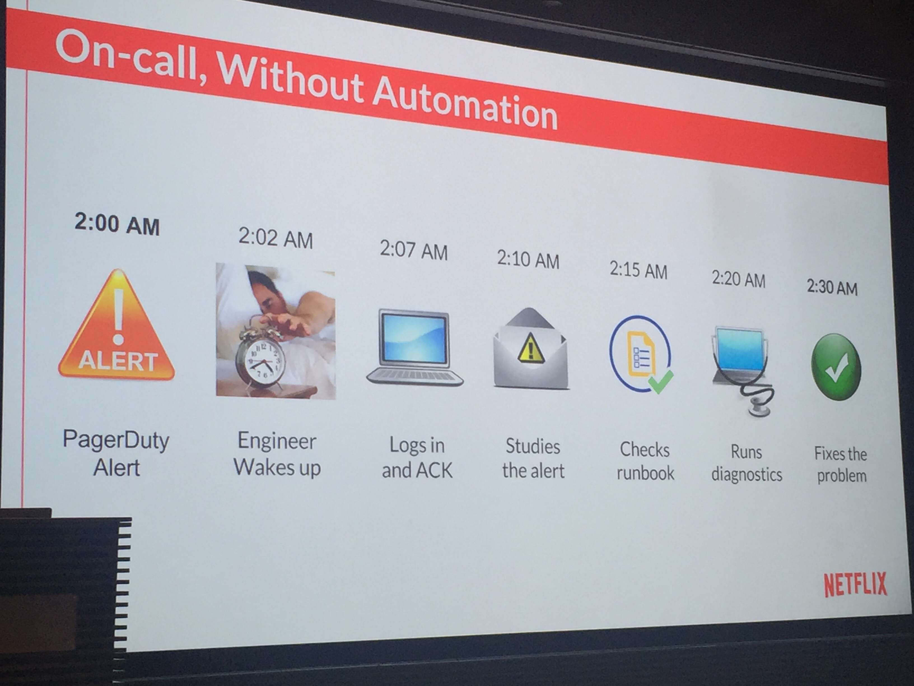
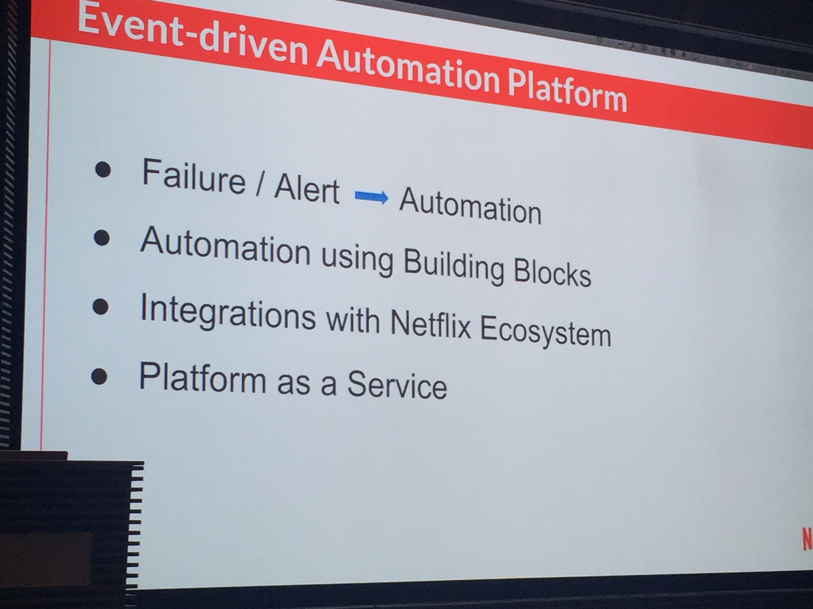
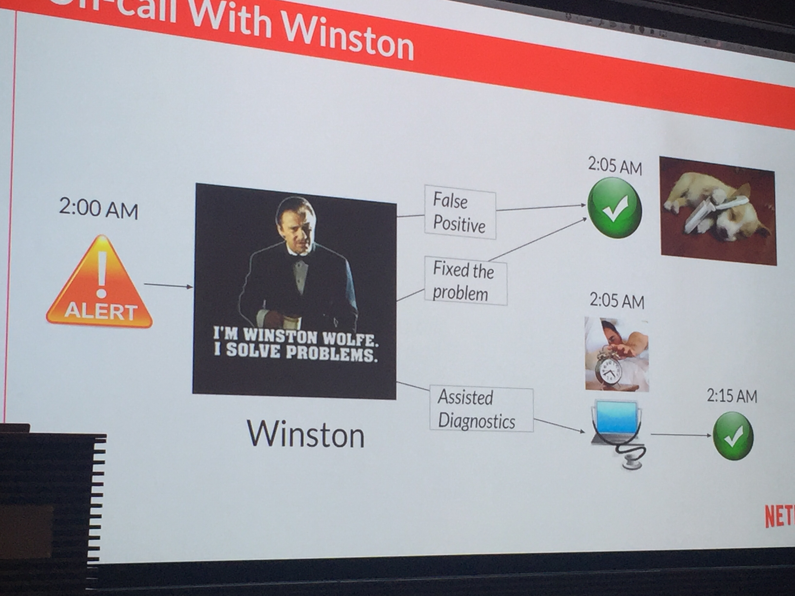
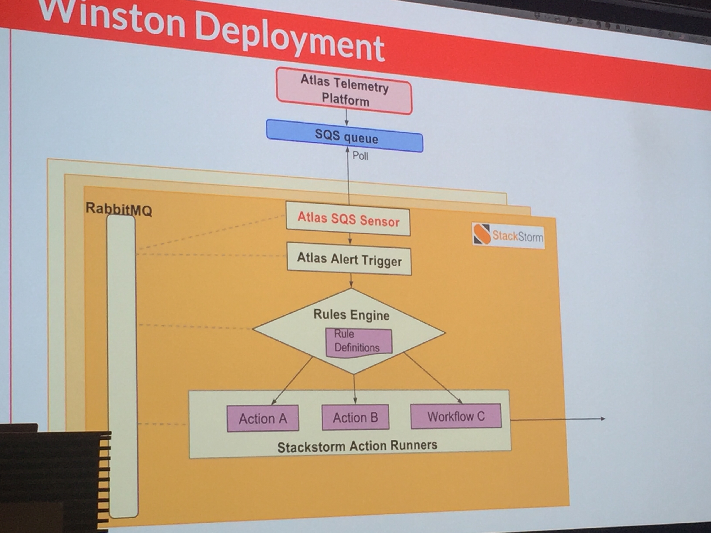

November 21, 2015
by Evan Powell
This week two excellent engineers at Netflix spoke at the Event Driven Automation meet-up which Netflix hosted. It was great to see old friends and thought leaders from Cisco, Facebook, LinkedIn and elsewhere. This blog summarizes Netflix’s presentation.
My quick summary is that it was the best presentation I’ve seen that combines both solid reasoning about why to move towards auto-remediation as well as information about how to do so.
Before we get to all that substance, however, I should admit that my favorite moment of the evening was probably when they explained why Netflix calls auto-remediation based on StackStorm “Winston.” Remember Mr Wolf?

The entire video (of the meet-up that is, not Pulp Fiction) will be posted on the Event Driven Automation meet-up soon. I highly recommend it and I’ll try to remember to cross link here when it is posted. [note here it is: https://www.youtube.com/watch?v=ln8MhCJGC-g&feature=youtu.be ] As mentioned below, an upcoming Automation Happy Hour will dig into Netflix’s Winston as well.
After introductions of our speakers Sayli and JS we got down to business
JS kicked off the discussion by talking about the great AWS reboot of last year; you may remember that Amazon discovered a Xen vulnerability and over a particular weekend they rebooted basically the entire fleet.
While this caused considerable stress at Netflix it did not cause downtime to their Cassandra fleet thanks in large part to the existing remediation plus of course the resiliency of Cassandra.
However, JS explained that their experience – and the massive scaling they are undertaking at Netflix – helped motivate the teams at Netflix to pay attention to what worked and what was not working so well with the existing remediation.
In short, the pre-existing remediation still far too often left the engineer on call and dealing with 2am pages.

Incidentally – we’ve seen this pattern before. While Jenkins has some workflow capabilities one is really stretching its capabilities to use it in this way.
As they explained, the result is team burn-out and more:

Looking at the human workflow – how alerts are handled absent an effective auto-remediation flow – makes it clear why this is.

As you can see – it takes at least 30 minutes to solve the problem and during that time a number of sometimes intricate manual tasks are performed under duress, at 2am.
Netflix dwelled on a photo of a physical runbook at the event. It was a binder maybe 7-10 inches thick. Imagine trying to search through that at 2am. And yet that’s – or the digital equivalent – is often what occurs without automated remediation.
Their experience led them towards a handful of seemingly simple requirements:

When I first say this slide, my gut sort of clenched as I thought: “oh noos, we have become PaaS!” It turns out that they meant more that they wanted to emulate the approach taken by Facebook and Linkedin and elsewhere – the remediation itself should be extensible and run as a service, so that other groups could consume it.
The automation using building blocks is itself worthy of a blog. Actually, if you scan our blog you’ll see that theme woven into a number of blogs already.
I’m leaving out a number of slides of course just to give a summary.
At this point the talk turned to a brief view of the technologies and then to outcomes.
Once they started using StackStorm, they were able to change the process. Note that they call their remediation solution Winston, which is excellent both because as mentioned a)
and b) because by naming their StackStorm based remediation something other than StackStorm they recognize the work they and other users do to adapt StackStorm to their environment. Suffice it to say we perceive and appreciate the real engineering Netflix has done to help StackStorm mature and deliver value.
These days, instead of waiting for pages, they use their Winston to solve an ever increasing percentage of issues before they distract and disrupt the humans. They used the following illustration to show the event flow these days (note that the doggie has a pager by its head – so paging is still possible :)).

Sayli emphasized that when pages do happen they happen with “assisted diagnosis” already performed. So when you get paged you already have what we tend to call facilitated troubleshooting performed. Hence the stuff you do every time a condition of type X is reported is already done and you hopefully can use your pattern matching skills to take those results and quickly identify and then fix (maybe again with Winston / StackStorm’s help) the issue.
Being engineers they didn’t stop at that level, of course. They went into the underlying architecture a bit. As you can see they leverage StackStorm to pull events out of the SQS based queue via which their monitoring, called Atlas, announces events. StackStorm then matches on those events, determines what course of action to take, and then executes on that course of action. And all components scale horizontally and vertically.

This point caused some real excitement in the audience. There were a number of questions about “who watches the watcher” and “why remediate when you can just do it right the first time.”
Regarding the first question, JS claimed that so far they’ve been unable to overrun StackStorm with events. Even so, they err on the side of flagging StackStorm events as high priority (such as StackStorm starting to peg a CPU) since conceivably that event could be the sign that the dam is leaking water. They have thought about using StackStorm itself to remediate StackStorm – a pattern we’ve seen elsewhere – however have not yet implemented it.
Regarding the question about “why not do it right the first time” they said yes, sure. Of course, as Vinay Shah, an engineering leader said at the Meet-up:
“if remediation was not needed then neither would be monitoring.”
And as I’ve pointed out before, we have 158 and counting monitoring projects. Shit happens people, deal with it!
Having said that, one benefit of auto remediation is you can start to enable developers to themselves think not just about how to test their systems (aka test driven development) but how to remediate them. Why would they take on this perspective – well, at Netflix and many other places these days the developers have pagers. This dynamic is a huge motivation for developers to embrace StackStorm and remediation platforms more generally.
This summary is just the skeleton of what was to me the best overall presentation I’ve seen of the why, how and so what of auto-remediation. As is always the case in these meet-ups, the conversations in the aisle over burritos and beers was fascinating and invaluable. It was great to catch up with folks like Shane Gibson and to meet face to face some of the team at Pleexi for example.
Hopefully this has whetted your appetite. Good news, in addition to the upcoming posting of the video you can also join StackStorm’s Happy Hour on December 1st. Sayli and JS will join StackStorm’s Patrick Hoolboom and James Fryman to dig in deeper into Winston and StackStorm. Please come armed with questions.
Register here for that Happy Hour: www.stackstorm.com/register/
Last but not least, if you want to take a look at StackStorm, head to StackStorm.com and grab either the Community Edition or the Enterprise Edition. Both editions are based on the same code – Enterprise Edition has some capabilities, including Flow, that help especially enterprises get value out of StackStorm. You can also see an example of Cassandra auto-remediation in a tutorial blog format – complete with a snazzy Flow gif – here.
Finally – many thanks to JS and Sayli and Vinay and Nir and of course Christos and the rest of the team at Netflix. Giving back to the overall community by hosting the meet-up was truly good of you :).
{kind=link}